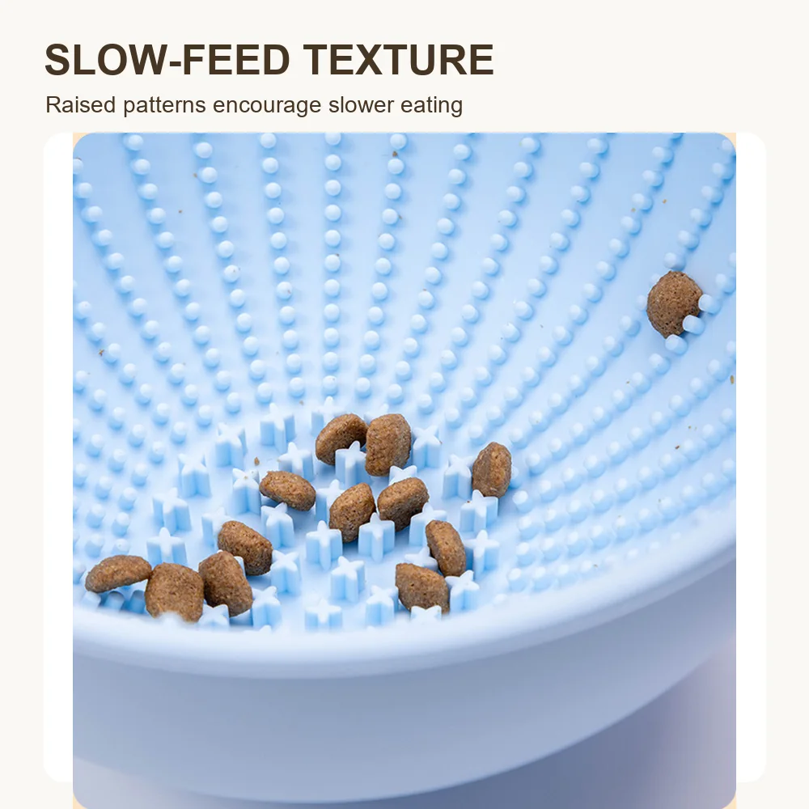

A dog that empties a bowl in forty seconds is not simply greedy. Fast eating is a behaviour with several ordinary causes, one or two medical ones, and a small set of fixes that work — plus three popular tips that do nothing at all.
We make slow feeder bowls, so we have an obvious interest in this topic. That is exactly why the second half of this article spends as much space on methods that do not involve a bowl.
The short answer
Most fast eaters are fast for one of four reasons: they are competing for food (real or remembered), the food is highly palatable or they get it rarely, they are bored or waiting too long between meals, or they are puppies and cats eating small portions out of a large bowl.
If several of those overlap — two dogs in a house, one meal a day, a bowl that gets put down and picked up five minutes later — the speed doubles.
The causes, one by one
Competition, real or remembered
Dogs descended from scavengers that could not rely on a next meal. In a house with more than one pet, that instinct gets a target. Even a dog that has always been fed alone can develop the habit after a stay in a boarding kennel or a week with a visiting dog.
Food that is worth hurrying for
Wet food, raw food, table scraps and anything with a strong smell get eaten faster than plain kibble. A dog that eats dry food slowly all week may bolt the moment something different lands in the bowl.
Too long between meals
A single large meal every 24 hours produces a hungrier dog at feeding time than the same amount split in two. This is one of the easiest things to change, and it is often overlooked because it costs nothing.
Boredom
A dog with nothing to do for nine hours treats dinner as the event of the day. Enrichment elsewhere in the day reduces the urgency at the bowl — slowly, but it does.
Puppies
Puppies are fed small portions several times a day out of bowls sized for adult dogs. The food disappears because there is not much of it, and competition with littermates teaches the habit early. A puppy that eats in ten seconds is usually not a problem; a puppy that gulps without chewing and then brings it back up is worth watching.
Cats
Cats do the same thing for similar reasons — small portions, high-value wet food, other cats in the house. A cat that eats a whole pouch in under a minute and then vomits is the classic case.
When it is medical
Persistent ravenous appetite, weight loss despite eating, or a sudden change in eating behaviour in an adult dog belongs in a vet appointment, not in a bowl change. Parasites, malabsorption and endocrine conditions all present this way. Nothing on this page replaces that conversation.
Does speed actually matter?
Sometimes. Owners usually notice three things: vomiting or bringing up whole kibble shortly after eating, gas, and a dog that guards the bowl. Swallowed air and unchewed food are the mechanical explanation for the first two.
For deep-chested breeds, vets also discuss the relationship between fast eating and bloat. That is a veterinary subject, and a bowl is not a treatment — if your dog is a large deep-chested breed, ask your vet what they want you to do, and treat anything you read online (including this) as background rather than advice.
Six things that actually slow a dog down
1. Put obstacles in the bowl
A slow feeder bowl forces the dog to work around ridges, beads or channels instead of taking a mouthful from a flat surface. It works because it changes the mechanics: the tongue and nose have to separate each piece, so a meal that took forty seconds takes several minutes. The deeper the obstacles and the smaller the gaps, the slower the meal — which is why the same dog can be slowed by one bowl and not another.
2. Use a lick mat for wet food
Wet food, yoghurt, pâté or soft treats spread across a textured mat take far longer than the same amount in a bowl, because the dog has to lick rather than swallow. This is the better tool for the dog that bolts wet food specifically.
3. Scatter the food
Throwing kibble across a hard floor turns a meal into a search. It costs nothing, works on any surface that is easy to clean, and is the fastest thing to try tonight.
4. Split the meal
Two or three smaller meals instead of one large one reduces the urgency at each feeding. For dogs that eat once a day, this alone often changes the behaviour within a week.
5. Feed pets separately
If there is more than one animal, separate rooms or a closed door do more than any bowl. Competition is the driver; remove the audience and the urgency drops.
6. Use the meal as an activity
Puzzle feeders, snuffle mats and frozen lick mats all replace a bowl-shaped meal with something that takes time. For a bored dog this addresses the cause rather than the symptom.

How to tell whether it worked
Do not guess. Time the meal tonight, before changing anything, and write the number down. Then change one thing and time it again for three days.
Three outcomes are worth knowing:
- The meal takes longer and the dog is calm afterwards. It worked. Keep it.
- The meal takes longer but the dog gets frustrated, barks or gives up. The bowl is too hard or too deep for the dog's size. Step back to an easier pattern rather than pushing through.
- Nothing changes. The cause is almost certainly not the bowl. Go back to the list above: two animals, one meal a day, or a medical question.
Give any change two weeks before judging it. Eating speed also moves with the food: the same dog will be slower on a kibble it likes less, which is why a fair test uses the same food before and after.
Three things that do not work
A bigger bowl. The dog eats just as fast from a larger flat surface. Size is not the variable; the surface is.
A raised bowl. Raising the bowl is sometimes suggested for comfort or for older dogs, but it does not slow eating — if anything it makes the swallow easier.
Putting a ball or a rock in the bowl. This is the most common homemade fix and the one with the clearest risk: dogs have cracked teeth and swallowed objects doing this. Use a bowl designed for it instead.
Where a bowl fits, and where it does not
Changing the bowl is the quickest fix for a healthy dog that eats too fast out of habit, and a slow feeder is the tool that requires the least change from the owner. It is not the answer for a dog that is eating fast because of a medical problem, and it is not a substitute for splitting meals or feeding pets separately.
In our experience the combination that owners stick with is boring: a slow feeder for the main meal, a lick mat for wet food, and separate rooms if there are two animals. Everything else is optional.
If you are sourcing these for a brand
We manufacture silicone slow feeder bowls and lick mats for pet brands, wholesalers and Amazon sellers — 20 SKUs across ten bowls and ten mats, MOQ from 10 pcs on stock colours, custom Pantone colours and logo on request. Our bowls are made from silicone sheet that carries LFGB, FDA and REACH test reports; the report numbers are published on our certifications page, and this guide explains how to read them.